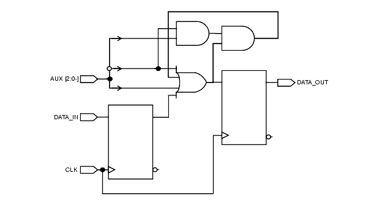
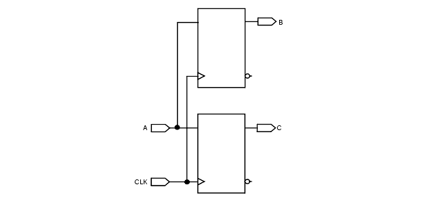
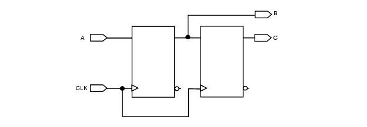

Introduction
This chapter provides detailed reference information for the Leda Formality policy, which is centered on the Synopsys formal verification tool Formality. The policy is designed to simplify and improve your use of Formality in the design flow. This policy is available for both Verilog and VHDL source code. The rules are grouped into the rulesets shown in Table 2
.
Table 2: Formality Policy Rulesets
"Hard Case Ruleset" These rules detect hardware constructs that require more attention when using Formality (for example, asynchronous feedback loops, use of DesignWare, etc.). "Simulation Mismatch Ruleset" These rules detect constructs that can generate mismatches between RTL and gate-level simulations. "V2K Ruleset" These rules detect Verilog 2001 features that are not supported in Formality 2003.06. "SystemVerilog Ruleset" These rules detect SystemVerilog features that are not supported in Formality 2006.06. Hard Case Ruleset
The following rules are from the hard case ruleset:
FM_1_1
Message: Avoid asynchronous feedback loop
Description Formality does not support automatic loop breaking in RTL-to-gate checking. To solve this problem, manually break the loop or remove it. Policy FORMALITY Ruleset HARD_CASE Language VHDL/Verilog Type Chip-level Severity Fatal
Example
The following diagram shows an invalid circuit that has an asynchronous feedback loop.

FM_1_2
Message: Usage of complex arithmetic operations that include multiplication, division, remainder or modulus is not recommended (important memory usage)
Description Formality supports arithmetic operators (+, -, *, /), but it has some limitations depending on the version of the software that you are using. To solve this problem, split the operators over several assignments. Policy FORMALITY Ruleset HARD_CASE Language VHDL/Verilog Type Chip-level Severity Warning
Example
The following examples of valid and invalid Verilog code illustrate this problem and how to correct it:
Invalid Verilog Code:
module FM_1_2_NG ( A,B,C,D,E); input [7:0] A,B,C,D; output [15:0] E; reg [15:0] E; always @( A or B or C or D) begin E = (A+B) * (C+D); // FAIL // Complex arithmetic binary operation with multiplier end endmoduleValid Verilog Code:
module FM_1_2_OK( A,B,C ); input [7:0] A,B; output [15:0] C; reg [15:0] C; always @( A or B ) begin C = A * B; // PASS, because there is ONLY one multiplier end endmoduleFM_1_3
Message: Identifier of instance starts with DW. If it is a DesignWare Foundation cell, then Formality requires extra settings
Description Formality supports DesignWare implementations, but you must define hdlin_dwroot in order to specify the location of the DesignWare components. To set the value of this variable within Formality, use:set hdlin_dwroot value where value is something like /snps-1999.10. Policy FORMALITY Ruleset HARD_CASE Language VHDL/Verilog Type Block-level Severity Warning
Example
The following example of invalid Verilog code illustrates an incorrect DesignWare direct instantiation:
module FM_1_3_1 ( inst_A, inst_B, inst_TC, inst_CLK, PRODUCT_inst ); parameter A_width = 8; parameter B_width = 8; input [A_width-1 : 0] inst_A; input [B_width-1 : 0] inst_B; input inst_TC; input inst_CLK; output [A_width+B_width-1 : 0] PRODUCT_inst; // Instance of DW02_mult_2_stage DW02_mult_2_stage #(A_width, B_width) U1 ( .A(inst_A), .B(inst_B), .TC(inst_TC), .CLK(inst_CLK), .PRODUCT(PRODUCT_inst) ); // FAIL endmoduleFM_1_4
Message: Do not assign signal/variable to asynchronous set/reset
Description When signal is assigned to asynchronous set/reset, it may cause simulation mismatch between RTL and Gate. Because after the synthesis, the signal will be changed only when the asynchronous set/reset is active. Policy FORMALITY Ruleset HARD_CASE Language VHDL/Verilog Type Block-level Severity Error
Example
The following example of invalid Verilog code and invalid VHDL illustrates the problem:
Invalid Verilog code
module fm_1_22 ( CLK, RST, RST_IN, D_IN, D_OUT); input CLK, RST, RST_IN, D_IN; output D_OUT; reg D_OUT; always@(posedge CLK or negedge RST) begin if (!RST) D_OUT <= RST_IN; else D_OUT <= D_IN; end endmoduleInvalid VHDL code
process (CLK , RST) begin if (RST=='0') then D_OUT <= RST_IN; elsif (CLK'event and CLK == '1') then D_OUT <= D_IN; end if; end process;FM_1_5
Message: Unit name should not be the same as library cell
Description When user module name is same as library cell, it may cause confusion that which is used by synthesis tools. It needs to change the user module name that is not duplicated with library cells. Policy FORMALITY Ruleset HARD_CASE Language VHDL/Verilog Type Block-level Severity Warning
FM_1_6
Message: Use only one asynchronous set/reset signal per process
Description When there are multiple asynchronous signals in a always/process, the RTL description shows prioritized condition. But synthesis tools may ignore that kind of priority with directives. So that it may cause simulation mismatch between RTL and Gate. Policy FORMALITY Ruleset HARD_CASE Language VHDL/Verilog Type Block-level Severity Error
Example
The following example of invalid Verilog code and invalid VHDL illustrates the problem:
Invalid Verilog code
always@(posedge CLK or negedge RST or negedge SET) begin if (!RST) D_OUT <= 1'b0; else if (!SET) D_OUT <= 1'b1; else D_OUT <= D_IN; end
Invalid VHDL code
process (CLK , RST, SET) begin if (RST=='0') then D_OUT <= '0'; elsif (SET == '0') then D_OUT <= '1'; elsif ( CLK'event and CLK = '1' ) then D_OUT <= D_IN; end if; end process;FM_1_7
Message: Signal assigned more than once on a single flow of control
Description When there are multiple non-blocking assignments to the same signal, the assignment value will not be stable. Because the order of assignment does not take care. Policy FORMALITY Ruleset HARD_CASE Language Verilog Type Block-level Severity Warning
Example
The following example of invalid Verilog code illustrate this problem:
Invalid Verilog code
module fm_1_7 (sel, en, dout); input sel, en; output dout; reg dout; always @(sel or en) begin if (sel) dout <= 1'b0; if (en) dout <= 1'b0; end endmoduleSimulation Mismatch Ruleset
The following rules are from the simulation mismatch ruleset:
FM_2_1A
Message: Redundant signals in the sensitivity list
Description The synthesis tool used by Formality does not strictly follow the sensitivity list when performing hardware inference. This means that an incorrect sensitivity list results in simulation mismatches between the pre- and post-synthesis simulations. For a sequential process, the sensitivity list must contain only the clock and reset if it is asynchronous. For a combinatorial process, all read signals must be in the sensitivity list. Policy FORMALITY Ruleset SIMULATION_MISMATCH Language VHDL/Verilog Type Block-level Severity Error
Example
The following examples of invalid VHDL code exhibits this problem:
library IEEE; use IEEE.std_logic_1164.all; entity FM_2_1_3 is port( A,B,C,D : in std_logic; E : out std_logic ); end FM_2_1_3 ; architecture ARCH of FM_2_1_3 is begin process(A,B,C,D) begin -- FAIL : "D" is redundant in sensitivity list if (A='1') then E <= B; else E <= C; end if; end process ; end ARCH;FM_2_1B
Message: Missing signals in the sensitivity list
Description By default, Formality generates warning messages when it finds missing signals in a sensitivity list. In such cases, the verification does not run because the synthesis tool used by Formality does not strictly follow the sensitivity list when performing hardware inference. This means that an incorrect sensitivity list results in simulation mismatches between the pre- and post-synthesis simulations. For a sequential process, the sensitivity list must contain only the clock and reset if it is an asynchronous reset.For a combinatorial process, all read signals must be in the sensitivity list.Note that Formality users can control this setting with the "hdlin_warn_on_mismatch_message" variable. Policy FORMALITY Ruleset SIMULATION_MISMATCH Language VHDL/Verilog Type Block-level Severity Error
The following examples of invalid Verilog code exhibits this problem:
module FM_2_1 (A,B,C,SEL); input A,B,SEL; output C; reg C; always@(A or B) begin case (SEL) // FAIL : "SEL" is missing in sensitivity list 1'b1 : C = A; 1'b0 : C = B; default C = 1'bx; endcase end endmoduleFM_2_10
Message: Using X, Z values in case items is not recommended (such items may be ignored by synthesis tool)
Description Case items that use X or Z values are always considered to be false by the synthesis tool. This can cause simulation results to disagree with synthesis results. Policy FORMALITY Ruleset SIMULATION_MISMATCH Language VHDL/Verilog Type Block-level Severity Error
Example
The following examples of invalid Verilog and VHDL code exhibit this problem:
Invalid Verilog Code:
module FM_2_10 (A,B,C,SEL); input A,B; input [1:0] SEL; output C; reg C; always@(SEL) begin case (SEL) 2'b11 : C = A; 2'b10 : C = B; 2'b0X : C = 1'b1 ; // FAIL 2'b0Z : C = 1'b0 ; // FAIL endcase end endmoduleInvalid VHDL Code:
library IEEE; use IEEE.std_logic_1164.all; use IEEE.std_logic_arith.all; use IEEE.std_logic_unsigned.all; entity fm_2_10 is port( A : in std_logic_vector (1 downto 0 ); CE, BF : in std_logic; B : out std_logic ); end fm_2_10; architecture ARCH of fm_2_10 is begin process( A,CE,BF ) begin case A is when "11" => B <= CE; when "XX" => B <= BF; -- FAIL when others => B <= '1'; end case; end process ; end ARCH;FM_2_11
Message: Using signals in casex/z items is not recommended (maybe handled as don't care by simulation tool)
Description Simulation tools sometimes handle case X/Z items as "don't cares" because synthesis tools do not support "don't care" status. This can cause simulation results to disagree with synthesis results. Policy FORMALITY Ruleset SIMULATION_MISMATCH Language Verilog Type Block-level Severity Error
Example
The following example of invalid Verilog code exhibits this problem:
module FM_2_11 (A, Z); input A; output Z; reg Z; wire tmp; assign tmp = A ? 1'b0 : 1'bX; always @(tmp) begin casex (1'b1) tmp : Z = 1'b1; // FAIL default: Z = 1'b0; endcase end endmoduleFM_2_12
Message: Incomplete case_statement using full_case directive is not recommended (not supported by simulation tool)
Description Simulation tools do not support the Synopsys full_case directive. To solve this problem, remove the Synopsys full_case directive or use a default clause. Policy FORMALITY Ruleset SIMULATION_MISMATCH Language Verilog Type Block-level Severity Error
Example
The following example of invalid Verilog code exhibits this problem:
module FM_2_12 (A,SEL,OUT0); input A ; input [1:0] SEL; output OUT0; reg OUT0; always @( A or SEL) begin case (SEL) // FAIL -- Synopsys full_case 2'b00 : OUT = 1'b0; 2'b01 : OUT = 1'b1; 2'b11 : OUT = A ; // This is not full_case definition endcase end endmoduleFM_2_13
Message: When case items are duplicated (parallel), do not use parallel_case directive
Description Simulation tools do not support the Synopsys parallel_case directive. To solve this problem, change your RTL code to avoid overlapping branches. This prevents mismatches between pre- and post-synthesis simulation results. Policy FORMALITY Ruleset SIMULATION_MISMATCH Language Verilog Type Block-level Severity Error
Example
The following example of invalid Verilog code exhibits this problem:
module FM_2_13 (SEL,OUT0); input [1:0] SEL ; output OUT0; reg OUT0; always@(SEL) begin case ( SEL ) // FAIL -- Synopsys parallel_case 2'b10: y = 1'b0; 2'b01: y = 1'b1; 2'b11: y = 1'b0; 2'b11: y = 1'b1; // This is parallel case endcase end endmoduleFM_2_15
Message: Using blocking assignments in sequential always block may generate incorrect logic
Description Using blocking assignments in sequential blocks can create invalid logic (see example). It will flag an error only if the LHS infers a register. This rule is flagged for unintentional latches also. Policy FORMALITY Ruleset SIMULATION_MISMATCH Language Verilog Type Block-level Severity Error
Example
The following examples of valid and invalid Verilog code, accompanied by corresponding circuit diagrams, illustrate this problem and how to correct it:
Invalid Verilog Code:
always@(posedge CLK) begin B = A; C = B; end
Valid Verilog Code:
always@(posedge CLK) begin B <= A; C <= B; end
The example given below will not flag an error for B, assuming B is not used elsewhere or is not a port.
always@(posedge CLK) begin B = A; C <= B; endFM_2_16
Message: Using non-blocking assignments in combinational always block may generate incorrect logic
Description Using non-blocking assignments in combinational always blocks can cause mismatches between pre- and post-synthesis simulation results. It will flag an error if the LHS does not infers a latch, even an unintentional one. Policy FORMALITY Ruleset SIMULATION_MISMATCH Language Verilog Type Block-level Severity Error
Example
The following examples of valid and invalid Verilog code illustrate this problem and how to correct it:
Invalid Verilog Code:
module FM_2_16_BAD (A,B,C,OUT_1); input A,B,C; output OUT_1; reg OUT_1,TMP; always @ ( A or B or C) begin TMP <= A & B; OUT_1 <= TMP | C; endmodule
Valid Verilog Code:
module FM_2_16_OK (A,B,C,OUT_1); input A,B,C; output OUT_1; reg OUT_1,TMP; always @ ( A or B or C) begin TMP = A & B; OUT_1 = TMP | C; endmoduleFM_2_17
Message: Avoid operand size mismatch assignments
Description Simulation and synthesis tools do not always extend operands of different sizes the same way. To solve this problem, use operands of the same size. Otherwise, you may get simulation mismatches.It flags an error if there is a mismatch between actuals and formals in function calls and module instantiations. It also flag an error on declarations. For example, wire [0:7]w = (test)?a[0:8]:1'b1;Policy FORMALITY Ruleset SIMULATION_MISMATCH Language VHDL/Verilog Type Block-level Severity Error
Example
The following examples of invalid VHDL and Verilog code and valid Verilog code illustrate this problem and how to correct it:
Invalid Verilog Code:
module FM_2_17 (A, B); inout [7:0] A; input B; assign A = B ? 4'b0 : 4'bz; // FAIL : A is 8 bit endmodule
Valid Verilog Code:
module FM_2_17_OK (A, B); inout [7:0] A; input B; assign A = B ? 8'b0 : 8'bz; // PASS endmoduleInvalid VHDL Code:
entity test is port( in_1 : in bit_vector ( 3 downto 0 ); in_2 : in bit_vector ( 3 downto 0 ); out_1 : out bit_vector ( 7 downto 0 ) ); end; architecture rtl of test is begin out_1 <= in_1 and in_2; -- FAIL : out_1 is 8 bit end;FM_2_18
Message: Default clause must be last choice in case statement
Description Some tools ignore case items written after the default clause. To solve this problem, declare the default clause as the last one. Policy FORMALITY Ruleset SIMULATION_MISMATCH Language Verilog Type Block-level Severity Error
Example
The following examples of valid and invalid Verilog code illustrate this problem and how to correct it:
Invalid Verilog Code:
module FM_2_18_NG (A,B,C,D,SEL,OUT0); input [1:0] SEL ; input A,B,C,D ; output OUT0 ; reg OUT0 ; always @( SEL or A or B or C or D) begin case (SEL) // FAIL 2'b00 : OUT0 = A ; 2'b01 : OUT0 = B ; default : OUT0 = D ; // Default clause must be last choice 2'b10 : OUT0 = C ; endcase end endmoduleValid Verilog Code:
module FM_2_18_OK (A,B,C,D,SEL,OUT0); input [1:0] SEL ; input A,B,C,D ; output OUT0 ; reg OUT0 ; always @( SEL or A or B or C or D) begin case (SEL) // PASS 2'b00 : OUT0 = A ; 2'b01 : OUT0 = B ; 2'b10 : OUT0 = C ; default : OUT0 = D ; endcase end endmoduleFM_2_19
Message: Using net type other than wire (wand, wor, ...) is not recommended (can generate mismatch during simulation)
Description Synthesis tools map wand or wor to logic gates. This can cause mismatches between RTL and gate-level simulations. Policy FORMALITY Ruleset SIMULATION_MISMATCH Language Verilog Type Block-level Severity Error
Example
The following example of invalid Verilog code exhibits this problem:
module FM_2_19 ( DATA_1,DATA_2, OUT0); input DATA_1,DATA_2; output OUT0; reg OUT0; wand tmp_OUT; // FAIL assign tmp_OUT = DATA_1; assign tmp_OUT = DATA_2; always @ ( tmp_OUT ) begin OUT0 = tmp_OUT; end endmoduleFM_2_2
Message: Delays are ignored by synthesis tool
Description Synthesis tools ignore delay values. This can cause mismatches between RTL and gate-level simulations. Policy FORMALITY Ruleset SIMULATION_MISMATCH Language VHDL/Verilog Type Block-level Severity Error
Example
The following examples of invalid Verilog and VHDL code exhibit this problem:
Invalid Verilog Code:
module FM_2_2 ( a, b, q); parameter delay = 10; input a, b; output q; assign #delay q = a + b; // FAIL : Don't use delay endmoduleInvalid VHDL Code:
library IEEE; use IEEE.std_logic_1164.all; entity FM_2_2 is port( CLK,A,B: in std_logic; REG_OUT : out std_logic ); end FM_2_2 ; architecture ARCH of FM_2_2 is signal tmp : std_logic; begin process(CLK,A) begin if (CLK'event and CLK='1') then tmp <= A; end if; end process ; REG_OUT <= tmp and B after 2 ns; -- FAIL : Don't use delay end ARCH;FM_2_20
Message: Do not use event_control in assignments (not handled by all tools)
Description Some tools do not support event control in assignment statements. Policy FORMALITY Ruleset SIMULATION_MISMATCH Language Verilog Type Block-level Severity Error
Example
The following examples of valid and invalid Verilog code illustrate this problem and how to correct it:
Invalid Verilog Code:
module FM_2_20_NG ( CLK, DATA, Q ); input CLK, DATA; output Q; reg Q; always begin Q <= @ ( posedge CLK ) DATA; // FAIL end endmoduleValid Verilog Code:
module FM_2_20_OK ( CLK, DATA, Q ); input CLK, DATA; output Q; reg Q; always @ (posedge CLK) begin Q <= DATA; // PASS end endmoduleFM_2_21
Message: Do not use duplicated port definitions (some tools rename duplicated ports automatically)
Description Some tools automatically change duplicate port names found in the same module. Policy FORMALITY Ruleset SIMULATION_MISMATCH Language Verilog Type Block-level Severity Error
Example
The following examples of valid and invalid Verilog code illustrate this problem and how to correct it:
Invalid Verilog Code:
module FM_2_21_NG ( CLK, DATA, Q ,CLK); // FAIL : CLK is defined twice. input CLK, DATA; output Q; reg Q; always @(posedge CLK) begin Q <= DATA; end endmoduleValid Verilog Code:
module FM_2_21_OK ( CLK, DATA, Q ); // PASS input CLK, DATA; output Q; reg Q; always @(posedge CLK) begin Q <= DATA; end endmoduleFM_2_22
Message: Possible range overflow
Description Check the range index value to make sure it does not exceed the allowed range. Range overflows can cause unpredictable results. Policy FORMALITY Ruleset SIMULATION_MISMATCH Language Verilog Type Block-level Severity Warning
Example
The following examples of valid and invalid Verilog code illustrate this problem and how to correct it:
Invalid Verilog Code:
module FM_2_22_NG ( a,b_out,array,c); input [2:0] a; input [3:0] array; input c; output b_out; reg b_out; always@( a or c or array) begin if(c) b_out = 1'b0; else b_out = array[a]; // FAIL : when a is over 4, it is overflow. end endmoduleValid Verilog Code:
module FM_2_22_OK ( a,b_out,array,c); input [1:0] a; input [3:0] array; input c; output b_out; reg b_out; always@( a or c or array) begin if(c) b_out = 1'b0; else b_out = array[a]; // PASS : a is 0 or 1 or 2 or 3. end endmoduleFM_2_23
Message: Non-driven output ports or signals detected
Description Non-driven output ports and signals are automatically set to 0 or 1. This can generate mismatches between RTL and gate-level simulations. Note that in VHDL designs, buffers are not considered to be drivers, and a signal driven by only one buffer is not considered to be driven. Policy FORMALITY Ruleset SIMULATION_MISMATCH Language VHDL/Verilog Type Block-level Severity Error
Example
The following examples of valid and invalid Verilog code illustrate this problem and how to correct it:
Invalid Verilog Code:
module FM_2_23_1( EN,CLK,D_1,D_2,OUT_1,OUT_2); input EN,CLK; input [0:3] D_1; input [0:2] D_2; output [0:7] OUT_1,OUT_2;// FAIL : OUT_1 is NOT assigned any signal. reg [0:7] OUT_2; reg [0:7] TMP; // FAIL : TMP[4] is NOT assigned any signal always @( EN or DA or DB) begin if( EN == 1'b1 ) TMP[0:3] <= DATA0; else TMP[5:7] <= DATA1; end always @ (posedge CLK) begin OUT_2 <= TMP; end endmoduleValid Verilog Code:
module FM_2_23_1( EN,CLK,D_1,D_2,OUT_2); input EN,CLK; input [0:4] D_1; input [0:2] D_2; output [0:7] OUT_2; // PASS reg [0:7] OUT_2; reg [0:7] TMP; // PASS : All TMP signals are assigned. always @( EN or D_1 or D_1) begin if( EN == 1'b1 ) TMP[0:4] <= D_1; else TMP[5:7] <= D_2; end always @ (posedge CLK) begin OUT_2 <= TMP; end endmoduleFM_2_24
Message: Bit/part select signals detected in sensitivity list: may be ignored by some synthesis and simulation tools
Description Some synthesis tools do not support bit/part select signals in sensitivity lists. Note that this rule incorrectly fires on VHDL processes that do not have sensitivity lists. Policy FORMALITY Ruleset SIMULATION_MISMATCH Language VHDL/Verilog Type Block-level Severity Warning
Example
The following example of invalid Verilog code exhibits this problem:
module FM_2_24_NG (A,B,C,D); input [3:0] A; input C,D; output B; reg B; always @(A[1] or A[2]) begin // FAIL : Don't use bit select signal in // sensitivity list if (A[1]) B <= C; else if (A[2]) B <= D; else B = 1'b1; end endmoduleFM_2_25
Message: Operator === is treated as ==
Description Formality interprets the Verilog case equality operator as a simple equality check. This can cause simulation results to disagree with synthesis. Policy FORMALITY Ruleset SIMULATION_MISMATCH Language Verilog Type Block-level Severity Warning
Example
The following example of invalid Verilog code exhibits this problem:
module test(a, b, o); input [1:0] a, b; output o; reg o; always@(a or b) begin if(a === b) o = 0; else o = 1; end endmoduleFM_2_26
Message: Operator !== is treated as !=
Description Formality interprets the Verilog case inequality operator as a simple inequality check. This can cause simulation results to disagree with synthesis. Policy FORMALITY Ruleset SIMULATION_MISMATCH Language Verilog Type Block-level Severity Warning
Example
The following example of invalid Verilog code exhibits this problem:
module test(a, b, o); input [1:0] a, b; output o; reg o; always@(a or b) begin if(a !== b) o = 0; else o = 1; end endmoduleFM_2_27
Message: Keyword TRANSPORT ignored in signal assignment
Description A transport delay mechanism is used when modeling an ideal device with infinite frequency response, in which any input pulse, no matter how short, produces an output pulse. Formality ignores such signal assignments. Policy FORMALITY Ruleset SIMULATION_MISMATCH Language VHDL Type Block-level Severity Error
Example
The following example of invalid VHDL code exhibits this problem:
library IEEE; use IEEE.std_logic_1164.all; entity FM_2_27 is port ( A : in std_logic; B : out std_logic); end FM_2_27; architecture FM_2_27_arch of FM_2_27 is signal B1 : std_logic; signal B2 : std_logic; signal B3 : std_logic; signal B4 : std_logic; signal B5 : std_logic; begin B <= transport A after 10 ns; -- FAIL blk : block (A='1') is begin B <= guarded transport A after 10 ns; -- FAIL B <= transport A after 10 ns; -- FAIL end block blk; process(A) begin B4 <= transport A after 10 ns; -- FAIL B4 <= transport A ; -- FAIL B5 <= A after 10 ns; -- PASS end process; end FM_2_27_arch;FM_2_3
Message: Variables must be initialized before being used (to prevent latch inference)
Description When you use a local variable that is only valid in a process statement, be sure to initialize (assign) the variable before you refer to it. If you use a variable before it is initialized, simulation tools handle that variable as an unsettled value. Policy FORMALITY Ruleset SIMULATION_MISMATCH Language VHDL Type Block-level Severity Error
Example
The following examples of valid and invalid VHDL code illustrate this problem and how to correct it:
Invalid VHDL Code:
architecture ARCH of FM_2_3 is begin process(DATA0,ENV) variable TMP: STD_LOGIC; begin OUT0 <= TMP; if (EN = '1' ) then TMP := A_IN ; -- FAIL end if ; end process ; end ARCH;Valid VHDL Code:
architecture ARCH of FM_2_3 is begin process(DATA0,ENV) variable TMP: STD_LOGIC; begin if (EN = '1' ) then TMP := A_IN ; end if ; OUT0 <= TMP; end process ; end ARCH;FM_2_32
Message: Do not use latch description in subprogram
Description This can occur when a function contains multiple return statements that are inside conditional statements (such as if statements or case statements), and none of the conditional statements are executed. Policy FORMALITY Ruleset SIMULATION_MISMATCH Language VHDL Type Block-level Severity Error
Example
The following example of invalid VHDL code exhibits this problem:
entity FM_2_32 is end; architecture ARCH of FM_2_32 is function bad_funct(arg1: integer) return integer is begin if (arg1 = 1) then return 42; end if; -- when 'if' is false, function returns no value end; signal z: integer; begin z <= bad_funct(0); end;FM_2_33A
Message: Do not use map_to_module attribute
Description map_to_module attribute is supported by synthesis tools only, so that it may cause simulation mismatch between RTL and gate. Policy FORMALITY Ruleset SIMULATION_MISMATCH Language VHDL/Verilog Type Block-level Severity Warning
FM_2_33B
Message: Do not use one_cold or one_hot attributes
Description one_cold or one_hot attributes are supported by synthesis tools only, so that it may cause simulation mismatch between RTL and gate. Policy FORMALITY Ruleset SIMULATION_MISMATCH Language VHDL/Verilog Type Block-level Severity Warning
FM_2_33C
Message: Do not use enum_encoding attribute
Description Enum_encoding attribute is supported by synthesis tools only, so that it may cause simulation mismatch between RTL and gate. Policy FORMALITY Ruleset SIMULATION_MISMATCH Language VHDL Type Block-level Severity Warning
FM_2_33D
Message: Do not use translate_on/off or synthesis_on/off pragmas
Description Translate off/on or synthesis off/on attributes are supported by synthesis tools only, so that it may cause simulation mismatch between RTL and gate. Policy FORMALITY Ruleset SIMULATION_MISMATCH Language VHDL/Verilog Type Block-level Severity Warning
FM_2_33E
Message: Do not use enum or state_vector attributes
Description Enum or state_vector attributes are supported by synthesis tools only, so that it may cause simulation mismatch between RTL and gate. Policy FORMALITY Ruleset SIMULATION_MISMATCH Language Verilog Type Block-level Severity Warning
FM_2_34B
Message: Do not use 'unconnected_drive
Description 'unconnected_drive directive is by supported simulation tools only, so that it may cause simulation mismatch between RTL and gate. Policy FORMALITY Ruleset SIMULATION_MISMATCH Language Verilog Type Block-level Severity Warning
FM_2_34C
Message: Do not use 'resetall
Description 'resetall directive is supported by simulation tools only, so that it may cause simulation mismatch between RTL and gate. Policy FORMALITY Ruleset SIMULATION_MISMATCH Language Verilog Type Block-level Severity Warning
FM_2_34D
Message: Do not use 'default_nettype
Description 'default_nettype directive is supported by simulation tools only, so that it may cause simulation mismatch between RTL and gate. Policy FORMALITY Ruleset SIMULATION_MISMATCH Language Verilog Type Block-level Severity Warning
FM_2_35
Message: Use fully assigned variables in function bodies
Description Function is always used as combinational logic by synthesis tools. But simulation tools may use function as latch, when function does not have fully assignments for every conditions. It may cause simulation mismatch between RTL and gate. Policy FORMALITY Ruleset SIMULATION_MISMATCH Language Verilog Type Block-level Severity Warning
Example
The following examples of invalid and valid Verilog code illustrate this problem and how to correct it:
Invalid Verilog Code:
function test; //FAIL input D_IN,RST; if( RST ) test = D_IN; // FAIL endfunctionValid Verilog Code:
function test; //PASS input D_IN,RST; if( RST ) test = D_IN; else test = 1'b1; // PASS, because variable is fully assigned endfunction
Some SystemVerilog functions will give false violations for this rule and it is best to disable it for SV code.
Inout or output parameter (result):
function void test (int a , inout bit [`SIZE-1:0] result ); if (a == 0) return; result = a * result * $root.test ( a-1 ) ; endfunctionLocal variables such as i in the below example:
function STP test ; input STP s ; int i,j; begin for(i=0;i<4;i++) begin s.r = s.lvec[i]; if (s.r >0) begin $display ($time,,"%d%d %b",j,i,s.r); s.b = 1; return s ; end else $display ("%d %b",i,s.r); end end endfunctionRecursive functions:
function bit [`SIZE-1:0] test ; input int a; //begin if (a == 0) return 1; if (a > 0) begin test = a * test ( a-1 ) ; end //end endfunction
Simulation functions
function func1; bit [P:0] a; bit [P:P-1] b; bit [P:P+2] c; bit [P:P*P] d; bit [-P:0] e; bit [1-P:P*P] f; bit [P:5] g; bit [0:-P] h; bit [P-P:P] i; bit [P/P:P] j; bit [P%2:P] k; $displayb (a,,b,,c,,d,,e,,f,,g,,h,,i,,j,,k); endfunctionFM_2_36
Message: Signal is read before being assigned
Description When the signal is read before assignment, simulation tools execute it as the order. But synthesis tools does not depend on the order. It may cause simulation mismatch between RTL and gate-level. Policy FORMALITY Ruleset SIMULATION_MISMATCH Language Verilog Type Block-level Severity Warning
Example
The following examples of invalid and valid Verilog code illustrate this problem and how to correct it:
Invalid Verilog Code:
module fm_2_36 (A, B, C, D); input A,B,C; output D; reg D,tmp; always@( A or B or C ) begin D = C & tmp; tmp = A & B; end endmoduleValid Verilog Code:
always@( A or B or C ) begin tmp = A & B; D = C & tmp; endFM_2_4
Message: Assignment to X is not recommended (handled differently by simulation and synthesis tools). Does not flag an error for use of x in default clause of case statements
Description Simulation and synthesis tools handle X value assignments differently. Simulation tools handle X value assignments as simple assignments, but synthesis tools may ignore X value assignments. This can cause mismatches between the simulation results. Policy FORMALITY Ruleset SIMULATION_MISMATCH Language VHDL/Verilog Type Block-level Severity Error
Example
The following examples of invalid Verilog and VHDL code exhibit this problem:
Invalid Verilog Code:
module FM_2_4 ( SET,DATA0,OUT0); input SET,DATA0; output OUT0; reg OUT0; always @ (SET or DATA0) begin if ( SET == 0 ) OUT0 <= 1'bX; // FAIL else OUT0 <= DATA0; end endmoduleInvalid VHDL Code:
library IEEE; use IEEE.std_logic_1164.all; entity FM_2_4 is port( DATA0,SET : in STD_LOGIC ; OUT0 : out STD_LOGIC ); end FM_2_4 ; architecture ARCH of FM_2_4 is begin process( DATA0, SET ) begin if SET = '0' then OUT0 <= 'X'; -- FAIL else OUT0 <= DATA0; end if ; end process ; end ARCH;FM_2_5
Message: Strength values are ignored by synthesis tools
Description Synthesis tools ignore the following weak values:
- VHDL (L, H, W, U, -)
- Verilog (supply0/1, strong0/1, pull0/1, weak0/1, highz0/1)
Policy FORMALITY Ruleset SIMULATION_MISMATCH Language VHDL/Verilog Type Block-level Severity Error
Example
The following examples of invalid Verilog and VHDL code exhibit this problem:
Invalid Verilog Code:
module FM_2_5 (); wire (supply0,supply1) tmp = 1'b1; // FAIL endmoduleInvalid VHDL Code:
library IEEE; use IEEE.std_logic_1164.all; entity FM_2_5 is port( DATA0 ,CLK ,EN : in STD_LOGIC ; OUT0 : out STD_LOGIC ); end FM_2_5 ; architecture ARCH of FM_2_5 is begin process( DATA0, CLK ,EN) begin if (CLK'event and CLK = '0') then if (ENV = '1' ) then OUT0 <= 'U'; -- FAIL else OUT0 <= 'W'; -- FAIL end if; end if ; end process ; end ARCH;FM_2_6A
Message: Initial statements are ignored by synthesis tools
Description Synthesis tools ignore initial statements and values defined in declarations. Do not use such initial statements, because they can cause mismatches between RTL and gate-level simulations. Policy FORMALITY Ruleset SIMULATION_MISMATCH Language Verilog Type Block-level Severity Error
Example
The following example of invalid Verilog code exhibits this problem:
module FM_2_6 ( DATA0,DATA1,OUT0); input DATA0,DATA1; output OUT0; reg OUT0; initial begin // FAIL OUT0 = 0; end always @( DATA0 or DATA1) begin OUT0 <= DATA0; end endmoduleFM_2_6B
Message: Do not use assignment in net/signal declaration
Description Synthesis tools ignore initial statements and values defined in declarations. Do not use such initial statements, because they can cause mismatches between RTL and gate-level simulations. Policy FORMALITY Ruleset SIMULATION_MISMATCH Language VHDL/Verilog Type Block-level Severity Error
Example
The following example of invalid VHDL code exhibits this problem:
library IEEE; use IEEE.std_logic_1164.all; entity FM_2_6 is port( DATA0 : in STD_LOGIC := '0'; -- FAIL DATA1 : in STD_LOGIC := '0'; -- FAIL CLK : in STD_LOGIC := '1'; -- FAIL OUT0 : out STD_LOGIC := '0' ); -- FAIL end FM_2_6 ; architecture ARCH of FM_2_6 is signal TMP : STD_LOGIC := '1'; -- FAIL begin process( DATA0, DATA1 ) begin TMP <= DATA0 and DATA1; end process ; process( TMP, CLK ) begin if (CLK'event and CLK = '0') then OUT0 <= TMP; end if ; end process ; end ARCH;FM_2_7
Message: Use named association in port map
Description Using ordered connections is dangerous because it is easy to make mistakes when changing from one library to another. To solve this problem, use named associations instead. Policy FORMALITY Ruleset SIMULATION_MISMATCH Language VHDL/Verilog Type Block-level Severity Warning
Example
The following examples of invalid Verilog and VHDL code exhibit this problem:
Invalid Verilog Code:
module fm_2_7 (A, B, C, D, OUT0, OUT1); input A, B, C, D; output OUT0, OUT1; MOD_AAA U1 (A, B, E); //FAIL endmodule module MOD_AAA (A, B, E); input A, B; output E; endmoduleInvalid VHDL Code:
library IEEE; use IEEE.std_logic_1164.all; entity FM_2_7 is port( DATA0, DATA1,C LK : in STD_LOGIC ; OUT0 : out STD_LOGIC ); end FM_2_7 ; architecture ARCH of FM_2_7 is component LOW port ( DATA0, DATA1, CLK : in std_logic; OUT0 : out std_logic ) ; end component; begin U0: LOW port map ( DATA0,DATA1,CLK,OUT0 ); -- FAIL end ARCH;FM_2_8
Message: Multiple non-tristate drivers detected for <%item>
Description Using drivers in several always/process blocks generates wired connections. Depending on the delays, these wires can cause differences between RTL and gate-level simulations. Policy FORMALITY Ruleset SIMULATION_MISMATCH Language VHDL/Verilog Type Chip-level Severity Warning
Example
The following examples of invalid Verilog and VHDL code exhibit this problem:
Invalid Verilog Code:
module FM_2_8 (CLK,A,B,C); input CLK,A,B; output C; reg tmp; // FAIL : tmp has multiple assignment always@(posedge CLK) begin tmp <= A; // 1 assignment end always@(posedge CLK) begin tmp <= B; // 2 assignement end assign C = tmp; endmoduleInvalid VHDL Code:
architecture ARCH of FM_2_8 is signal TMP : STD_LOGIC ; -- TMP has multiple assignments begin process( DATA0, DATA1 ) begin TMP <= DATA0 and DATA1; -- 1 assigment end process ; process( TMP, CLK ) begin if (CLK'event and CLK = '0') then OUT0 <= TMP; end if ; end process ; process( DATA0, DATA1 ) begin TMP <= DATA0 nor DATA1; -- FAIL : 2 assignment end process ; end ARCH;FM_2_9
Message: Using X, Z values or ? for comparison is not recommended (differently handled by simulation/synthesis tools). It will also check for case statements.
Description Comparisons to X, Z, or ? values are always considered to be false by the synthesis tool. This can cause simulation results to disagree with synthesis results. Policy FORMALITY Ruleset SIMULATION_MISMATCH Language VHDL/Verilog Type Block-level Severity Error
Example
The following examples of invalid Verilog and VHDL code exhibit this problem:
Invalid Verilog Code:
module FM_2_9 (A,B,C,D,OUT0); input A,B,C,D; output OUT0; reg OUT0; always @( A or B or C or D) begin if( A == 1'bZ ) // FAIL OUT0 <= B; else if ( A == 1'bX ) // FAIL OUT0 <= C; else OUT0 <= D; end endmoduleInvalid VHDL Code:
library IEEE; use IEEE.std_logic_1164.all; entity FM_2_9 is port( A,B,C,D : in STD_LOGIC ; OUT0 : out STD_LOGIC); end FM_2_9 ; architecture ARCH of FM_2_9 is begin process( A ,B,C,D ) begin if (A = 'X' ) then -- FAIL OUT0 <= B; elsif (A = 'Z' ) then -- FAIL OUT0 <= C; else OUT0 <= D; end if ; end process ; end ARCH;V2K Ruleset
The following rules are from the V2K (Verilog 2001) ruleset:
FM_106
Message: Do not use power operator
Description This is a limitation of Formality 2003.06. Policy FORMALITY Ruleset V2K Language Verilog Type Block-level Severity Error
FM_108
Message: Do not use recursive task or function
Description This is a limitation of Formality 2003.06. Policy FORMALITY Ruleset V2K Language Verilog Type Block-level Severity Error
FM_111
Message: Do not use v2k enhanced file IO
Description This is a limitation of Formality 2003.06. Policy FORMALITY Ruleset V2K Language Verilog Type Block-level Severity Error
FM_117
Message: Do not use variable initial value
Description This is a limitation of Formality 2003.06. Policy FORMALITY Ruleset V2K Language Verilog Type Block-level Severity Warning
SystemVerilog Ruleset
The following rules are from the SystemVerilog ruleset:
FM_200
Message: The intent of the always_latch construct is not verified by Formality
Description This rule checks if the SystemVerilog code uses the always_latch construct. This is a limitation of Formality 2006.06. Policy FORMALITY Ruleset SystemVerilog Language SystemVerilog Type Hardware Severity Warning
The following example of SystemVerilog code exhibits a violation of this rule:
// FAIL test case.
module latched_arith (input logic [7:0] a, b, input logic ena, output logic [7:0] sum, diff); always_latch if (ena) begin sum = a + b; diff = a - b; end endmoduleFM_201
Message: Declarations of types tasks and functions at $root is not supported
Description This rule checks if the SystemVerilog code has declarations of tasks and functions in $root instance. If it does, Leda issues an error message. This is a limitation of Formality 2006.06. Policy FORMALITY Ruleset SystemVerilog Language SystemVerilog Type Hardware Severity Error
The following example of SystemVerilog code exhibits a violation of this rule:
// FAIL - Function declared in $root function automatic reg [31:0] preg_cat (input reg [31:0] a, b); preg_cat = a + b; endfunction module func4 (input reg [31:0] in_a, in_b, output reg [31:0] data_out); assign data_out = preg_cat(in_a, in_b); endmoduleFM_202
Message: Reference to the $root instance path are not supported
Description This rule checks if the SystemVerilog code has references to $root instance path. If it does, Leda issues an error message. This is a limitation of Formality 2006.06. Policy FORMALITY Ruleset SystemVerilog Language SystemVerilog Type Hardware Severity Error
The following example of SystemVerilog code exhibits a violation of this rule:
typedef struct { logic d;} pilz; module m (a, y1); input bit a; output bit y1; always @* begin y1 = $root.pilz.d; // FAIL - Reference to $root instance path $root.pilz.d = a; end endmoduleFM_203
Message: Automatic interfaces are not supported
Description This rule checks if the SystemVerilog code has any automatic interfaces. If it does, Leda issues an error message. This is a limitation of Formality 2006.06. Policy FORMALITY Ruleset SystemVerilog Language SystemVerilog Type Hardware Severity Error
The following examples of SystemVerilog code exhibits a violation of this rule:
Example 1:
module automatic m (input int a, b, output bit [33:0] c); // Fail - // automatic module function fadd (input int a, b); fadd = a + b; endfunction assign c = fadd(a,b); endmodule;Example 2:
// Fail - This example has an automatic interface. interface automatic simple_bus; //Automatic inferface wire a,b; reg r1,r2; int factout; function integer fact; input [7:0] in; begin if (in == 0) fact = 1; else fact = (in-1) * in; end endfunction assign b = a; always begin r1 = a; if (a) r2 = a; else r2 = ~a; end always begin factout = fact(4); end endinterface module top (i, o_b, o_r1, o_r2, o_fout); input i; output o_b, o_r1, o_r2; output [31:0] o_fout; wire t1,t2; simple_bus ifc_inst(); assign ifc_inst.a = i; assign o_b = ifc_inst.b; assign o_r1 = ifc_inst.r1; assign o_r2 = ifc_inst.r2; assign o_fout = ifc_inst.factout; endmodule
FM_204
Message: Const declarations are not supported
Description This rule checks if the SystemVerilog code uses constant declaration. If it does, Leda issues an error message. This is a limitation of Formality 2006.06. Policy FORMALITY Ruleset SystemVerilog Language SystemVerilog Type Hardware Severity Error
The following example of SystemVerilog code exhibits a violation of this rule:
module m (input int i, output int o2); const int s = 100; //Fail - automatic module assign o2 = s + i; endmoduleFM_205
Message: Structure literal assignments are not supported
Description This rule checks if the SystemVerilog code uses structure literals. If it does, Leda issues an error message. This is a limitation of Formality 2006.06. Policy FORMALITY Ruleset SystemVerilog Language SystemVerilog Type Hardware Severity Error
The following example of SystemVerilog code exhibits a violation of this rule:
typedef struct { logic [32:0] sum; logic [31:0] diff; } addsub; module FM_205 (input [31:0] val1, input [31:0] val2, output addsub out); logic [31:0] tmp_diff; logic [32:0] tmp_sum; always@(val1 or val2) begin tmp_sum = val1 + val2; tmp_diff = val1 - val2; out = { tmp_sum, tmp_diff };//Should Fail - structure literals //but currently limitation in FE out = { sum:tmp_sum, diff:tmp_diff };//Fail -structure literals end endmoduleFM_206
Message: Array literal assignments are not supported
Description This rule checks if the SystemVerilog code uses array literals. If it does, Leda issues an error message. This is a limitation of Formality 2006.06. Policy FORMALITY Ruleset SystemVerilog Language SystemVerilog Type Hardware Severity Error
The following example of SystemVerilog code exhibits a violation of this rule:
module mFM_206 (output int d1_out_0, d1_out_1); int d1 [0:3]; assign d1 = { {0:7,1:3,2:0,3:5} }; //Fail - array literals endmoduleFM_207
Message: Generic interfaces are not supported
Description This rule checks if the SystemVerilog code uses generic interfaces. If it does, Leda issues an error message. This is a limitation of Formality 2006.06. Policy FORMALITY Ruleset SystemVerilog Language SystemVerilog Type Hardware Severity Error
The following example of SystemVerilog code exhibits a violation of this rule:
Note that module mod passes an unspecified interface reference as a place-holder for an interface to be selected when the module itself is instantiated. The unspecified interface is referred to as a generic interface reference.
interface abc (); bit a, b; bit d, e; logic [2:0] c; modport mp (input a, b, output c); endinterface interface abc_clone (); logic a, b; logic [2:0] c; modport mp1 (input a, b, output c); endinterface module top (a1, a2, b1, b2, c1, c2); input a1, a2, b1, b2; output logic [2:0] c1, c2; abc ab (); // interface abc instantiated abc_clone ac (); // interface abc_clone instantiated assign ab.a = a1; assign ab.b = b1; assign c1 = ab.c; assign ac.a = a2; assign ac.b = b2; assign c2 = ac.c; mod am (ab.mp); // passing ab.mp modport to generic interface mod pm (ac.mp1); // passing ac.mp1 modport to generic interface endmodule module mod (interface a); // generic interface always_comb a.c = a.a | a.b; endmodule